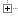
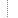
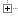
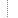

Деревья
Структура
Дерево является графом у которого есть единственный узел, называемый корнем. Рёбрами он связан с другими узлами (непосредственными потомками корня). Эти потомки, в свою очередь, имеют собственных потомков и т.д. Перемещаясь от корня по узлам дерева, можно попасть в любой узел, причём единственным образом. Деревья широко используются в различных задачах поиска решений. В этом документе обсуждаются способы визуального представления деревьев. К алгоритмам обработки деревьев мы вернёмся в дальнейшем.
Дерево будем задавать объектом: { nm, ar }, где nm - имя узла, а ar - массив ветвей (ближайших потомков). Так, следующий объект tree описывает бинарное дерево глубины 2, изображенное справа на рисунке:
var tree = {
nm:"root",
ar:[
{nm: "b1", ar:[ {nm:"a"}, {nm:"b"}] },
{nm: "b2", ar:[ {nm:"c"}, {nm:"d"}] },
]
};
JSON.stringify
Tree.getJSON = function (tr)
{
return JSON.stringify(tr).replace(/"(\w+)":/g, "$1:");
}
replace
Функция getJSON является статической и не требует создания экземпляра класса Tree при помощи new. Можно просто написать: document.write( Tree.getJSON(tree) ), что даст строку:
В классе Tree все статические функции продублированы как "динамические", при помощи указателя prototype:
function Tree(tr)
{
if(tr){
this.nm = tr.nm;
this.ar = tr.ar;
}
}
Tree.prototype.getJSON = function ()
{
return Tree.getJSON(this);
}
Таким образом, класс Tree может в статическом варианте обрабатывать структуры подобные tree,
а в динамическом - хранить дерево "внутри себя".
Например, дерево в JSON-формате можно вставить в документ также так: var t = new Tree(tree); document.write( t.getJSON() ).
Вывод дерева
При работе с деревьями естественно использовать рекурсивные методы. Напишем, например, функцию вывода дерева в "функциональном" виде, которая для структуры tree, приведенной выше, выдаст строку: :
Небольшие изменения этой функции, позволяют вывести дерево в виде списка html (функция Tree.getUL(tr), выше, справа). Ещё две функции Tree.getGIF(tr) (в виде папочек) и Tree.getSVG(tr) (традиционное преставление) будут рассмотрены позднее.Копирование деревьев
Присвоение деревьев, как и любых объектов, проводится по ссылке. Чтобы получить независимую копию дерева, напишем незамысловатую функцию:
Tree.copy = function (tr)
{
return JSON.parse(JSON.stringify(tr));
}
Теперь для следующего кода
var tree1 = { nm:"root", ar:[ {nm: "b1"}, {nm: "b2"} ] };
var tree2 = tree1; // тоже дерево (по ссылке)
var tree3 = Tree.copy(tree1); // независимая копия
tree1.ar[0].nm = "b3"; // меняем имя узла потомка
document.write(Tree.getFun(tree1), '; ', Tree.getFun(tree2),' и ', Tree.getFun(tree3));
получим:
.
JSON.parse
Генерация деревьев
Для тестирования различных алгоритмов, необходимо создавать деревья "на лету".
Напишем функцию, генерящую случайные деревья:
Рисовать ящики:
Функция Tree.rand принимает на вход 3 параметра: depth - максимальная глубина, branches - максимальное число ветвей и cut - вероятность обрыва ветки (0 < cut < 1). При каждом рекурсивном вызове depth уменьшается, пока не станет равным нулю:
Tree.rand = function (depth, branches, cut)
{
if(this.count===undefined) // статическая переменная
this.count = -1; // для нумерации узлов
this.count++; // следующий узел
if(depth < 1 || Math.random() < cut) // обрываем рост дерева по глубине
return { nm: this.count}; // или по вероятности 0 < cut < 1
var nm = this.count; // запоминаем (потомки увеличат)
var ar = new Array(1+Math.floor(Math.random()*branches));
for(var i=0; i < ar.length; i++) // рекурсивно для потомков
ar[i] = this.rand(depth-1, branches, cut);
return { nm:nm, ar:ar };
}
Получить максимальную глубину дерева tr и количество узлов можно при помощи следующих рекурсивных функций:
В качестве забавы, найдём среднюю глубину случайного дерева и среднее число узлов на нём (нажмите кнопку start):
Стоит попробовать вычислить эти параметры теоретически.
Деревья как функции
В ряде случаев удобнее задавать дерево не структурой, а строкой, подобной . Имена таких вложенных функций являются узлами дерева, а их аргументы - потомками этих узлов. При этом справедлива следующая грамматика:
NODE :- NAME(LIST) | NAME // узел - это функция или имя листа LIST :- NODE,LIST | NODE // список, это множество узлов через запятуюГрамматика является набором правил порождения синтаксически верных выражений. Она может выдать выражение f(x,g(h(a),z)), но не приведёт к синтаксически неверной записи типа f(,),(g(h,(a,z). В первой строке утверждается, что узлом дерева NODE может быть имя NAME (для терминальных узлов) или функция NAME(LIST) для нетеминальных. Эти две возможности перечисляются через вертикальную черту. Вторая строка - определение списка аргументов функции. При этом правило LIST :- NODE,LIST содержит в себе рекурсию (список - это узел NODE, после которого через запятую снова идёт список).
Функция Tree.parse(st) парсит строку st, выдавая на входе дерево в виде структуры. В ней введена статическая переменная pos указателя на текущее положение в анализируемой строке и вызывается первое грамматическое правило:
Tree.parse = function (st)
{
this.pos = 0; // статическая перемнная положение в st
return Tree.parseNODE(st);
}
Напишем функции для каждого элемента грамматики.
Функция Tree.parseNODE возвращает дерево { nm, ar }.
Функция Tree.parseNAME
даёт строку имени (узла или листа), которым будем считать что угодно, кроме скобок и запятых "(,)":Метод st.charAt(i) даёт i-й символ (начиная от 0) в строке (можно также писать st[i]). Метод s.indexOf(ch) возвращает положение символа ch в строке s или -1, если его там нет. Выше при помощи этого метода проверяется наличие в строке скобок или запятой. Наконец, st.substring(n1,n2) возвращает подстроку начиная с n1 и до (но не включая) n2.
Последняя функция парсинга вычитывает список переменных в "функции":
Tree.parseLIST = function (st)
{
var lst = [ this.parseNODE(st) ]; // первый элемент списка
if(this.pos >= st.length)
return lst; // конец строки и списка
else if(st.charAt(this.pos)===","){
this.pos++; // дошли до запятой
return lst.concat(this.parseLIST(st));
}
else if(st.charAt(this.pos)===")"){
this.pos++; // закрывающая скобка, конец списка
return lst;
}
else
return lst; // ошибка синтаксиса
}
Теперь в html-документе можно написать следующий код:
<script>
document.write(Tree.getSVG( // выводим как svg-картинку
Tree.parse( // получаем дерево из строки
"entity("
+"object(thing,being(creature(animal,bird,fish,insect),plant),part,group,stuff,space),"
+"concept(action,time,attr,mental,sound)"
+")"
)));
</script>
что приведёт к:
Вместо функции Tree.getSVG (вывод дерева как svg-картинки), можно воспользоваться любой другой функцией: Tree.getFun (в функциональном виде), Tree.getJSON (в JSON-формат), Tree.getUL (html-список) и Tree.getGIF ("файловая" система).
Дерево, как файловая система
Разберём подробнее функцию Tree.getGIF, выводящую дерево, подобно списку файлов и папок на компьютере, с возможностью сворачивания веток дерева и иерархической пометкой узлов (покликайте на папках, листиках и плюсиках):
<script>
var myTree = {
nm:"root",
ar:[ { nm:"folder", ar:[{nm: "file1"}] },
{ nm:"file2" },
{ nm:"file2" },
]};
document.write(Tree.getGIF(myTree));
</script>
Если же нужна динамичность, то необходимо создать экземпляр
класса Tree при помощи оператора new.
Его имя, как строку, необходимо передать в функцию и задать функцию рисования show,
которая вызывается деревом при его изменении.
Кроме стандартных сворачиваний и разворачиваний узлов (папок), реализована рекурсивная пометка узлов и листьев
(необходимо кликнуть на папку или лист). Соответствующие пометки
добавляются в каждый узел дерева свойством chk, равным 1
или 0. Статической функцией Tree.arrProp(tr,"chk",1) можно получить массив
всех выбранных листьев. Кроме этого, непомеченный узел-папки имеет значение
chk=2, если хотя бы один его потомок помечен. Если папка
помечается (chk=1), то автоматически помечаются все её потомки.
Если с папки снята пометка, то она снимается и с потомков. При изменении пометки вызывается функция select, а при клике на имя узла - функция click:
var myTree = new Tree(); // создаём экземпляр класса Tree
myTree.parse( // помещаем в него дерево, парся его из строки
"entity(object(thing,being(creature(animal,bird,fish,insect),plant),part,group,stuff,space))" );
myTree.show = function () { // функция вывода дерева в div-ке c id=myTreeID
document.getElementById("myTreeID").innerHTML = myTree.getGIF("myTree"); // имя объекта!!!
Tree.svg.skpY = 40; // сильнее растягиваем вниз
Tree.svg.colors = ["#FFC", "#F9F", "#FDF"]; // цвет для непомеченных и помеченных узлов для svg
document.getElementById("myTree2ID").innerHTML = myTree.getSVG(); // рисуем как svg-картинку
Tree.svg.skpY = 30; // исходное значение
}
myTree.click = function(n) { // функция вызовется при клике на узел n
if(n.ar) alert('this is node '+n.nm+' has ' + Tree.numNodes(n) + ' nodes');
else alert('this is leaf '+n.nm);
}
myTree.select = function(n) { // произошло изменение в пометке узлов
var arr = myTree.arrProp("chk", 1); // получить массив узлов с пометкой chk:1
var st = ""; // список помеченных листьев
for(var i=0; i < arr.length; i++)
st += arr[i].nm+(i+1 < arr.length? ", ":"");
document.getElementById("mySelectID").innerHTML = st;
}
myTree.getNodes(); // список всех узлов (нужно сделать один раз)
myTree.close(2); // закрыть все узлы ниже второго
myTree.show(); // выводим дерево
Реализация getANSII
Чтобы не погрязнуть в дизайнерских изысках, нарисуем сначала дерево при помощи псевдографики (ниже первый результат):
Tree.getANSII = function (tr, calc)
{
if(!calc){ // первый запуск (не рекурсия)
var st = "";
var lst = this.getANSII(tr, true); // получаем массив строк, котрые
for(var i=0; i < lst.length; i++) // сворачиваем в одну стрку
st += lst[i]+"\n"; // перевод каретки - для <pre>
return st;
}
if(!tr.ar || tr.ar.length===0) // это лист, возвращаем только имя
return ["-"+tr.nm];
var lst = []; // список строк, который вернёт узел
lst.push("-" + tr.nm);
for(var i=0; i < tr.ar.length; i++){ // по всем потомкам
var nxt = this.getANSII(tr.ar[i], true); // получаем массив строк потомка
for(var j=0; j < nxt.length; j++){ // добавляем его в массив этого узла
var ch = " "; // линии, соединяющие узлы
if(j===0){ // первая строка (с именем потомка)
if(i+1 !== tr.ar.length) // не последний потомок
ch = tr.ar[i].ar? " +-": " |-"; // " + " для папки и " |-" для листа
else // последний потомок
ch = tr.ar[i].ar? " +-": " L-"; // тоже, но нет линии вниз
}
else if(i+1 !== tr.ar.length) // соединительная линия вниз
ch = " | ";
lst.push(ch+nxt[j]);
}
}
return lst;
}
Реализация getGIF
Теперь можно модифицировать функцию getANSII для рисования красивого дерева. Оределим классы стилей:
.tree {
font-family: Verdana, Geneva, Arial, Helvetica, sans-serif;
font-size: 12px; /* размер шрифта */
line-height:normal; /* если в документе была изменена */
white-space: nowrap; /* перевод строки никогда не будет вставлен */
overflow: auto; /* при переполнении полоса прокрутки */
}
.tree .block {
display:block; /* div-ки прижимаются друг к другу снизу */
}
.tree img {
border: 0px;
vertical-align: middle; /* картинки центрируются по веритикали */
}
При наличии квадратных картинок (18px):p111.gif:
 ,
p110.gif: ,
l101.gif: ,
l111.gif:
,
p110.gif: ,
l101.gif: ,
l111.gif: l110.gif:
l110.gif: flop.gif:
flop.gif:  ,
page.gif:
,
page.gif:  .
.
следующий html-код:
<div class="tree">
<div class="blk">
<img src="p111.gif"/><img src="flop.gif"/>root</div>
<div class="blk">
<img src="l101.gif"/><img src="p110.gif"/><img src="flop.gif"/>folder</div>
<div class="blk">
<img src="l101.gif"/><img src="empt.gif"/><img src="l110.gif"/><img src="page.gif"/>file1</div>
<div class="blk">
<img src="l111.gif"/><img src="page.gif"/>file2</div>
<div class="blk">
<img src="l110.gif"/><img src="page.gif"/>file3</div>
</div>
приведёт к вполне себе симпатичному дереву:
rootfolder file1
file2file3
file1
file2file3Чтобы придать динамичности дереву из gif-ок, добавляются ссылки на картинки и назавания узлов. Так для картинок с плюсиками надо написать:
<a href="javascript: alert(!);"> <img src="_p111.gif"/></a>Дальнейшие детали можно найти в исходниках.
Графическое svg-представление
"Традиционное" рисование дерева в виде куста, растущего вниз, реализовано в функции getSVG. Она выводит дерево в виде текста - описания svg-файла. Его можно просто вствить в html-документ. Для настройки отображения дерева в svg-формате служит следующая структура:
Tree.svg = {
h : 20, // высота ящика для узла
w : 20, // минимальная ширина ящика для узла
chW : 10, // ширина буквы
skpY: 30, // отступить от имени узла
skpX: 10, // отступить от соседнего узла влево
cFill: "#FFFFCC", // цвет заливки
cText: "blue", // цвет текста
cLine: "black", // цвет линий
bound: false, // показывать ограничивающие ящики
colors: [], // массив цветов заливки ящиков по номеру свойства chk узла
};
Если узел дерева имеет пометку vis==false, то он не рисуется вместе со всеми потомками.
При пометке hide==true узел не рисуется, но пространство под него выделяется
(не сжимается, как это происходит при vis==false).
В зависимости от значения пометки chk=0,1,...
и наличия массива Tree.svg.colors, можно раскрашивать узлы дерева в различные цвета.
С деталями реализации функции getSVG можно разобраться по исходникам, которые достаточно хорошо задокументированы.
Справочник
Для работы с деревьями, необходимо подключить два модуля: tree.js и draw.js (графическое отображение).
Функции отображения дерева tr:
- getJSON(tr) - в JSON-формате;
- getFun(tr) - в функциональном виде типа: node(n1,n2);
- getUL(tr) - в виде html-перечислений ul-li;
- getSVG(tr) - графическое представление в svg-формате;
- getANSII(tr) - в символах псевдографики;
- getGIF(tr, name) - подобно файловой структуре, помощи картинок и css; если параметр name есть, он равен имени объекта Tree, создаваемого по new (для обработки интерактивного поведения);
- getNodes() - получить список всех узлов дерева и присовить им id в этом массиве, установить поля vis,opn,chk;
- close(depth) - для вывода функцией getGIF закрыть все узлы глубже depth
- depth(tr) - получить максимальную глубину дерева ;
- numNodes(tr) - получить количество узлов дерева tr;
- numLeaves(tr) - получить количество листьев дерева tr;
- copy(tr) - создать копиию дерева tr;
- set(tr, par, val, depth) - установить свойство par в значение val для всего дерева tr, не более чем на глубину depth;
- setNm(tr, par, val, nm) - установить свойство par в значение val для узлов дерева tr, имеющих имя узла равное nm;
- arrProp(tr, prop, val) - получить массив узлов дерева tr, имеющих свойство prop в значении val;
- create(depth, branches) - вернуть дерево глубиной depth c branches ветвями в каждом узле;
- rand(depth, branches, cut) - вернуть случайное дерево максимальной глубиной depth и branches ветвями, с вероятностью обрыва cut;
- calc(tr, fun) - Вызвать функицю fun(tr) для каждого узла дерева;
- parse(st) - получить дерево из строки st, задащей дерево в функциональной форме root(node1(leaf1,leaf2),leaf3);